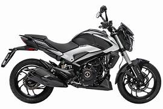

Bajaj Dominar 250 vale a pena?

Conheça a Bajaj Dominar 250
A Bajaj Dominar 250 chegou ao mercado brasileiro como uma opção interessante para quem procura uma moto com mais potência do que modelos de baixa cilindrada, mas ainda com preço acessível. Produzida pela fabricante indiana Bajaj, a Dominar 250 compartilha parte do visual e da proposta da Dominar 400, mas com um motor menor e custos mais baixos.
Por isso, muitas pessoas pesquisam no Google se a Bajaj Dominar 250 vale a pena antes de decidir pela compra. A moto promete bom desempenho, design moderno e um bom custo-benefício quando comparada com concorrentes da mesma faixa de preço.
Motor e desempenho
A Dominar 250 possui um motor monocilíndrico de aproximadamente 248 cilindradas. Esse motor entrega cerca de 27 cavalos de potência, o que é suficiente para garantir um bom desempenho tanto na cidade quanto em viagens curtas na estrada.
Comparada com motos de 150 ou 160 cilindradas, a Dominar 250 oferece uma aceleração mais forte e maior estabilidade em velocidades mais altas. Isso faz com que ela seja uma opção interessante para quem pretende usar a moto em trajetos urbanos e também em viagens ocasionais.
Consumo de combustível
O consumo é um fator importante na hora de escolher uma moto. No caso da Dominar 250, o consumo médio costuma ficar entre 30 km/l e 35 km/l, dependendo da forma de pilotagem e das condições da estrada.
Esse número é considerado bom para uma moto da categoria. Isso significa que o custo de uso pode ser relativamente equilibrado para quem precisa utilizar a moto todos os dias.
Preço da Bajaj Dominar 250
Um dos pontos que mais chamam atenção na Dominar 250 é o preço competitivo. Em comparação com algumas motos de marcas tradicionais, ela costuma oferecer mais equipamentos por um valor semelhante ou até menor.
Itens como iluminação em LED, painel digital e visual esportivo ajudam a tornar o modelo ainda mais atrativo para quem procura uma moto moderna e com bom custo-benefício.
Conclusão: Bajaj Dominar 250 vale a pena?
De forma geral, a resposta é que a Bajaj Dominar 250 vale a pena para muitos motociclistas que procuram uma moto mais potente que modelos básicos, mas sem chegar ao preço de motos maiores.
Ela oferece um conjunto interessante de potência, tecnologia e preço competitivo. Para quem deseja uma moto versátil para usar no dia a dia e também em pequenas viagens, a Dominar 250 pode ser uma escolha bastante interessante.
Outras notícias
Bajaj Dominar 400 vale a pena?
Qual moto escolher: Yamaha Fazer 250 ou Honda CB 300F Twister?